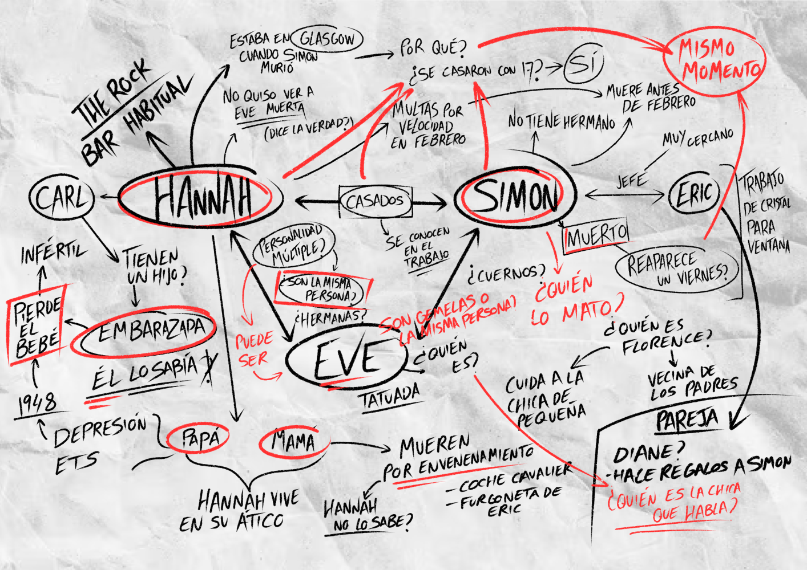

GAME ANALYSIS
"Her Story" and the Power of
Non-linear Narrative

What is “Her Story”?
‘Her Story’ is a story told in pieces. The game is presented to the player as a police search engine, in which you have access to lots of short videos representing unorganized pieces of some interrogations of a woman about a murder and depending on the search terms you introduce, some videos are shown to you. That’s the key point, the story is given to you in pieces, and it’s your job to put it all together and assemble the story in your head.
Unraveling the story:
Sincerely, I started playing ‘Her Story’ because I’m such a fan of narrative games and this was sold to me as that. What I did not expect was to find that the main gameplay was based around watching videos. Dozens and dozens of videos without an apparent order or sense.

My detective notes: connecting the dots of the interrogation.
That was the most magical part of ‘Her Story’ to me, and what constitutes nonlinear storytelling... (etc) ...cataloged ‘Her Story’ as one of the best examples of immersion.
The potential of nonlinear narrative
Ultimately, ‘Her Story’ gave me the chance to discover the power of nonlinear narrative in video games and how this (des)structure promotes such a unique and personal experience...